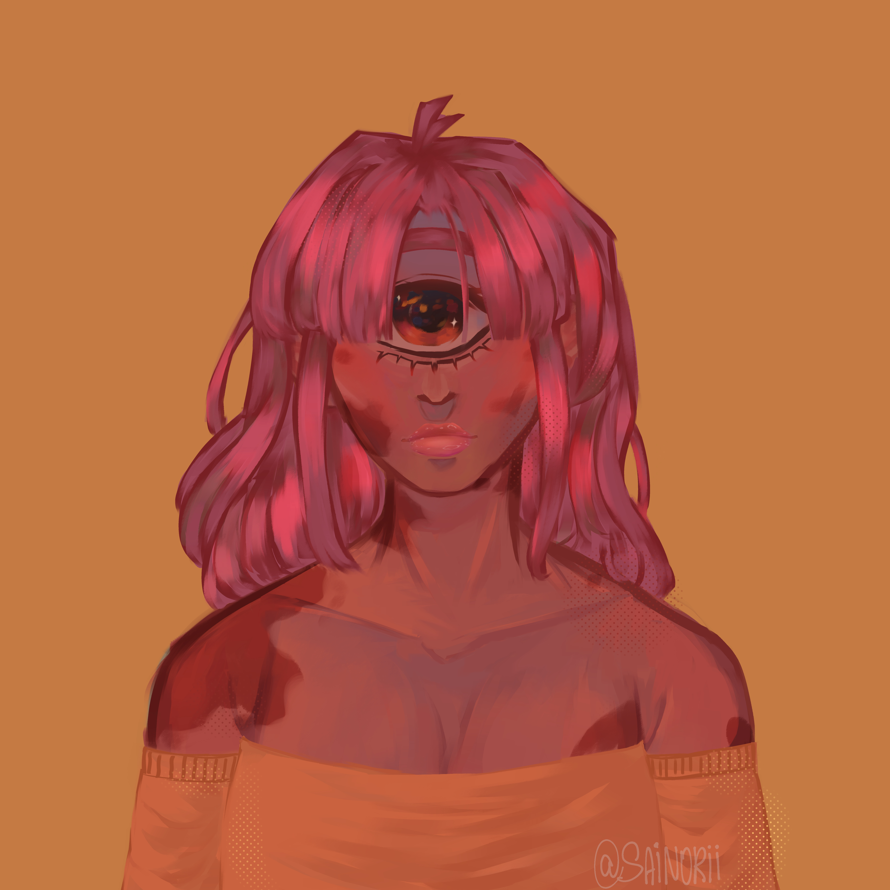
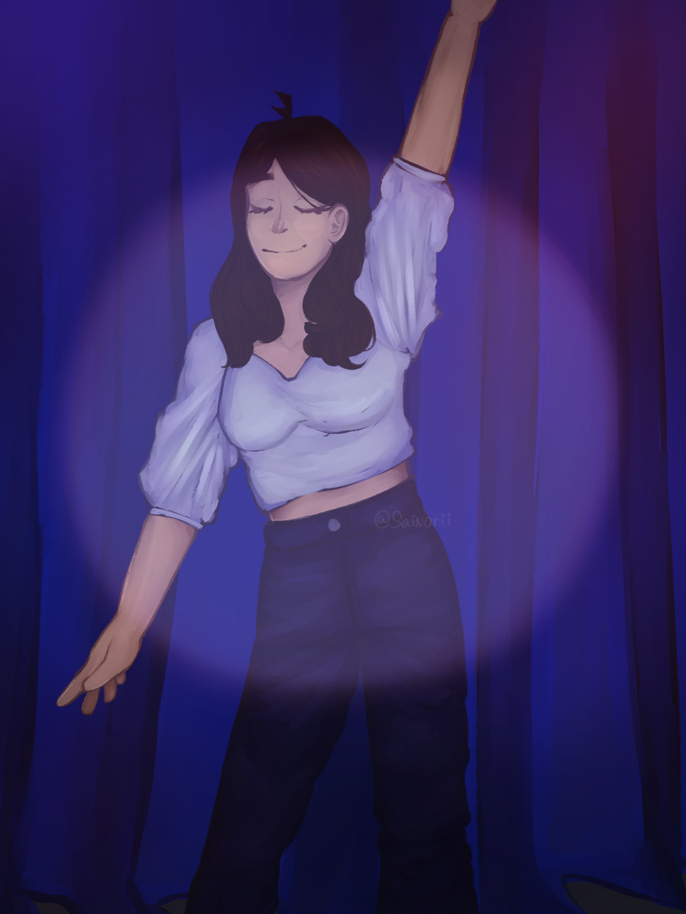

- ADRIANA RODRIGUEZ
- Este dibujo lo hice hace poco, es un re-make de un OC que hice hace 2 años.
20/09/2022

- ADRIANA RODRIGUEZ
- Un fanart de un RPG Maker llamado One shot, en donde se puede ver al protagonista tomando en sus manos un enorme bombillo.
05/01/2022
- ADRIANA RODRIGUEZ
- Es un OC mío el cual no tiene nombre e hice en una clase cuando estaba aburrida.
22/04/2022

- ADRIANA RODRIGUEZ
- Para el cumpleaños de una prima mía la dibuje.
04/04/2022